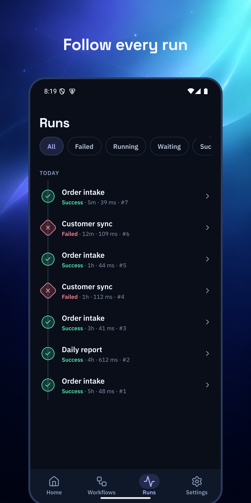

سير عمل n8n في متناول يدك.
تطبيق n8n للجوال الذي يريك ما فشل ولماذا ويصلحه بنقرة. راقب التشغيلات وعدّل سير العمل بدون لوحة الرسم وانقله بين الخوادم.
احصل عليه من Google Play


اعرف الإخفاقات أولاً
افتح التطبيق لترى أي سير عمل فشل وأي خطوة تعطلت ولماذا، مع زر لمراجعة الإخفاقات ومخطط نشاط لآخر 24 ساعة.
أصلح بنقرة
أسباب بلغة بسيطة، ومدخلات ومخرجات كل خطوة، وإصلاحات آمنة بنقرة للأخطاء الشائعة مثل الحقول الناقصة. أعد تشغيل التنفيذ من هاتفك.
عدّل بدون لوحة الرسم
أضف الخطوات وانقلها وأعد تسميتها واحذفها في مخطط مناسب للإبهام. عدّل الإعدادات بنماذج وشروط IF وSwitch، مع تراجع وإعادة ونسخ احتياطي تلقائي.
انقل بين الخوادم
انسخ سير العمل بين n8n السحابي والمستضاف والمحلي (1.x و2.x). يتم اكتشاف الأسرار قبل المشاركة.
خصوصية بالتصميم
يبقى مفتاح API في التخزين الآمن لهاتفك. يتصل Flowpocket بخادم n8n الذي تضيفه فقط. بلا حساب ولا إعلانات ولا تتبع.
العربية والإنجليزية
دعم كامل من اليمين إلى اليسار، ومظهر داكن وفاتح، وأزرار كبيرة.
افتح الإخفاقات في Flowpocket من n8n
استورد سير عمل الأخطاء هذا إلى n8n وضع عنوان خادمك وأرسل الرسالة الناتجة إلى تيليجرام أو سلاك أو البريد. الضغط على الرابط يفتح التشغيل الفاشل في Flowpocket.
أسئلة شائعة
هل Flowpocket تطبيق رسمي من n8n؟
لا. Flowpocket تطبيق مستقل وغير تابع لشركة n8n GmbH ولا معتمد منها. n8n علامة تجارية لصاحبها.
ما إصدارات n8n والاستضافة المدعومة؟
n8n بإصداريه 1.x و2.x على السحابة والخوادم المستضافة ذاتياً والأجهزة المحلية. تتصل بمفتاح API من n8n.
أين يُخزَّن مفتاح API؟
على هاتفك فقط في التخزين الآمن للجهاز، ويُرسل فقط إلى خادم n8n الخاص بك.
هل هو مجاني؟
المراقبة والإصلاح والتعديل لخادم واحد مجانية. Flowpocket Pro (عدة خوادم والنسخ بينها) شراء اختياري يتم عبر Google Play فقط.
هل يستطيع n8n فتح تشغيل فاشل داخل التطبيق؟
نعم. استخدم قالب الأخطاء المجاني أدناه: يبني رابط flowpocket:// يفتح التشغيل الفاشل على الخادم الصحيح.